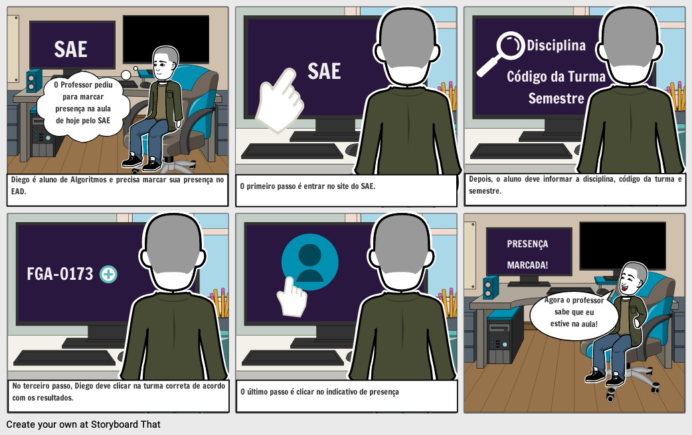

StoryBoards
Introdução:
Storyboard é um exemplo de prototipação de baixa-fidelidade, consistindo em uma série de desenhos mostrando como um usuário pode progredir em uma tarefa utilizando o produto que está sendo desenvolvido. Os Storyboards abaixo são referentes ao SAE, mostrando exemplo de tarefas que podem ser realizadas com sucesso nesse sistema e também exemplos de problemas de usabilidade encontrados pelos usuários.[1]
Abaixo se encontram 2 storyboards construídos com base em possíveis interações com o site do SAE.
StoryBoard 1 : Assinar a chamada
1.1. Preparo:
-
Personagens envolvidos: Diego Fernandes (Persona).
-
Ambiente da história: Quarto do Diego.
-
Tarefa a ser abordada: Assinar a chamada da aula.
1.2. Desenvolvimento da tarefa:
-
Passos envolvidos para realização da tarefa:
- Acessar o site do SAE.
- Inserir os dados requeridos.
- Clicar na turma correta.
- Clicar no indicativo de presença.
-
O que leva a pessoa a usar a aplicação? Marcar presença das aulas no EAD.
-
Qual tarefa será ilustrada? Diego irá assinar a chamada para informar o professor da presença do aluno na aula de APC.
1.3. Satisfação:
-
O que motiva as pessoas a quererem utilizar o sistema? Assinar a chamada para provar sua presença.
-
Quais objetivos podem ser alcançados através do sistema? Praticidade na hora de realizar a chamada, de forma remota e digital.
-
Quais necessidades que o sistema se propõe a sanar? Permitir que a chamada seja respondida de forma prática, remota e digital por cada aluno.
 Figura 1: Storyboard 1: Assinar a chamada
StoryBoard 2 : Inserir informações repetidas vezes
2.1. Preparo:
-
Personagens envolvidos: Jaqueline Dias (Persona).
-
Ambiente da história: Quarto do Jaqueline.
-
Tarefa a ser abordada: Entregar uma lista de exercícios após a resolução da prova.
2.2. Desenvolvimento da tarefa:
-
Passos envolvidos para realização da tarefa:
- Realizar a prova.
- Inserir os dados da turma.
- Clicar na turma correta.
- Enviar a lista.
-
O que leva a pessoa a usar a aplicação? Realizar tarefas relacionadas à disciplina como realizar provas, resolver exercícios, entre outras.
-
Qual tarefa será ilustrada? Jaqueline irá entregar uma lista de exerccios após a resolução de uma prova, mas terá que inserir novamente as informações sobre a turma.
2.3. Satisfação:
-
O que motiva as pessoas a quererem utilizar o sistema? Realizar diversas tarefas relacionadas a matéria, como realizar provas e resolver listas de exercícios. Entretanto, a realização das tarefas pode perder praticidade quando o usuário é obrigado a inserir as mesmas informações repetidas vezes.
-
Quais objetivos podem ser alcançados através do sistema? Responder provas e responder listas de exercícios, de forma remota e digital.
-
Quais necessidades que o sistema se propõe a sanar? Permitir que cada aluno responda provas e listas de questões de forma remota e digital.
 Figura 2: StoryBoard 2: Inserir informações repetidas vezes.
Figura 2: StoryBoard 2: Inserir informações repetidas vezes.
Referências:
-
[1] JENNIFER PREECE & YVONNE ROGERS & HELEN SHARP. Design de Interação: Além da interação homem-computador. John Wiley e Sons. São Paulo - SP. 1ª Edição. Editora Erica, 2005.
-
Site do SAE, perfil de Aluno (Acessado em 28/10/2020).
Versionamento:
| Data: | Versão: | Descrição: | Autor: |
|---|---|---|---|
| 14/10/2020 | 1.0 | Criação do Documento com os 2 StoryBoards | Gabriel Paiva, Murilo Gomes e Rodrigo Tiago |